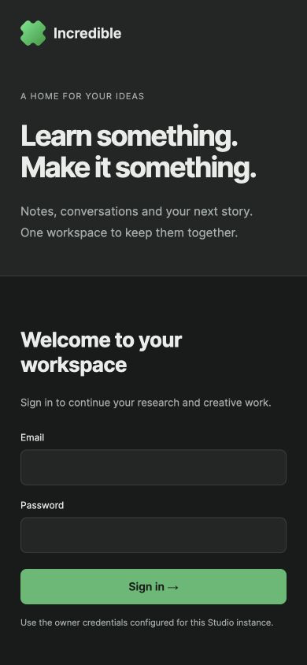
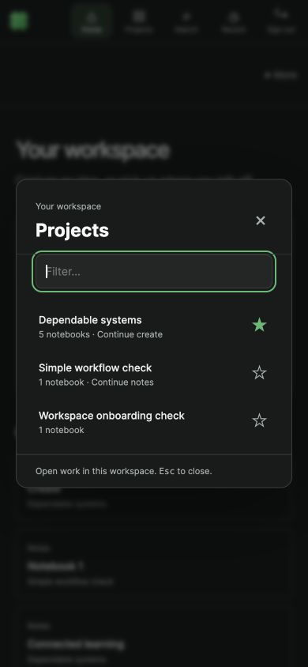

VISIBLE BROWSER PROOF · 18 OCTOBER 2026 · PARALLEL STACK 4291
One workspace.
A clear way in.
Macro-inspired navigation and session boundaries, adapted to Incredible's local learning → research → content workflow. These are screenshots of the running application, with HTML callouts added for review.
1. Start without credentials
- The original Incredible identity is retained.
- Continue locally is the only primary action. No default password or hosted account setup.
2. A persistent home for all projects
- The narrow rail provides stable global navigation. It stays in place across notes, chat, and outputs.
- Capture a note immediately, into an existing or new project.
- Resume a resource directly without remembering which panel or tab it lives in.
3. Keep attention on the document
- Project navigation has three clear destinations: Notes, Chat, Create.
- One main document surface. Source lineage and follow-up questions stay with the saved note.
- Resume chat when needed, preserving the existing focused/minimized chat behavior.
4. Search opens work in context
Search across projects; selecting a result opens the notebook, chat, or question in its original context. An unsaved note survived this navigation and the return through Recent.
5. Optional owner sign-in
Password mode was checked on temporary ports 4292/4392 using disposable test credentials. Invalid input stays in the form with an inline error. Valid login, reload, logout, and session renewal were exercised. This is local single-owner authentication; hosted team accounts are not included.
6. Phone-width checks

Login fits 390×844 with readable inputs and a clear primary action.
Project switching stays a single dismissible dialog. Global navigation moves to the top; Sign out remains available.Implementation notes, tested flows, and limitations →